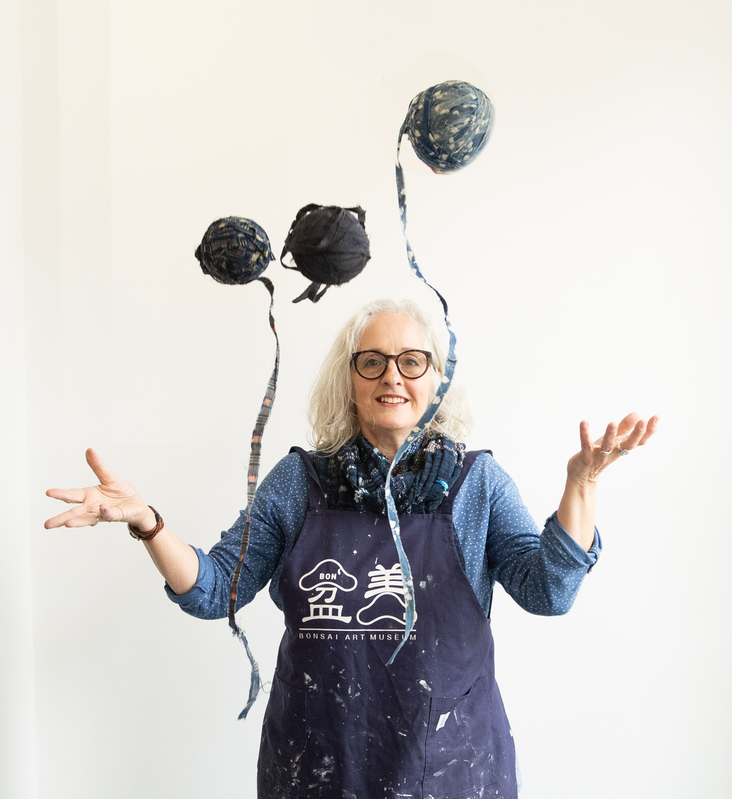

What is special about SAORI weaving?
SAORI weaving is weaving with no rules or restrictions. Weavers express themselves with complete freedom and creativity. SAORI weaving is about self-expression rather than technique. There is no forward planning involved, other than choosing the warp and yarns for the weft and then just weaving in the moment. here.
What do you mean by ‘wearable art’?

Clothes made using SAORI woven cloth are unique and beautiful. They reflect the personality of the maker and are art pieces in their own right. They look stunning, whether worn, hung over a chair, on a hanger or on the wall! Click here for the full range of looms and equipment. If there is anything you are interested in, let us know – even if we haven’t got the item in stock, we can reserve it for you when it comes in.
Why do you like the concept of making your own clothes by hand?

When you make anything by hand it becomes a part of you and your story. I am hugely inspired by ‘Boro’, which is a collective name for textiles made by poor people in Japan, at a time when cloth was very precious and every scrap had to be used and reused. There is such beauty and ingenuity in this cloth, and I feel a connection with the women who had to grow the hemp, thresh and spin it, dye and weave the cloth. When garments wore out they were darned, patched and repurposed. I think we could take something from that in this modern era. Cloth should be valued and respected.
What could the fashion industry learn from the ethos of SAORI weaving?
SAORI is the complete opposite of the fashion industry, which depends on mass-produced goods, trends and everyone wanting to look the same! Only in very high end fashion is it possible to produce handmade and therefore unique clothing. The wonderful thing about SAORI weaving is that unique fashion is accessible to all, even if you have very little training or experience of dressmaking.
What advice would you give somebody who wants to get into weaving but doesn’t know where to start?

There is a lot out there on the internet – YouTube videos, free workshops and tutorials, books and classes. There are also the Guilds – the Embroiderer’s Guild and Guild of Weavers, Spinners and Dyers – with groups all over the country. They hold regular workshops, talks and demos. For those who want to have a go at SAORI weaving, you’re always welcome to come to a Taster session or SAORI Weaving Day.